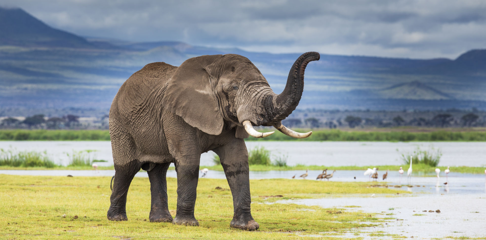

Explore the Animal Kingdom
Learn about a variety of fascinating animals from different parts of the world. Each one has its unique characteristics and contributes to the diversity of our planet.
Lions

Lions are majestic predators known for their distinctive manes. They are social animals that live in groups called prides. Lions are often referred to as the "king of the jungle."
Did you know? Lions are primarily nocturnal and are more active during the night.
Dolphins

Dolphins are highly intelligent marine mammals known for their playful behavior. They communicate using a variety of clicks and whistles. Dolphins are often associated with their friendly and social nature.
Did you know? Dolphins have a remarkable ability to use tools, such as sponges, for protection while foraging on the ocean floor.
Elephants
Elephants are the largest land animals, known for their impressive tusks. They are highly intelligent and have strong social bonds within their herds. Elephants are also symbols of wisdom and strength.
Did you know? Elephants are known for their excellent memory and can remember specific locations and individuals for many years.
Penguins

Penguins are flightless birds adapted for life in the water. They are known for their distinct black and white plumage and their efficient swimming abilities.
Did you know? Penguins engage in elaborate courtship rituals, and some species mate for life.
Giraffes

Giraffes are the world's tallest mammals, known for their long necks and spotted coat patterns. They are herbivores and use their height to reach leaves in tall trees.
Did you know? Giraffes have the same number of neck vertebrae as humans, but each vertebra is much larger.
Tigers

Tigers are powerful and solitary big cats known for their distinctive orange coat with black stripes. They are skilled hunters and are capable of taking down prey larger than themselves.
Did you know? Tigers are excellent swimmers and often cool off in rivers and streams during hot weather.